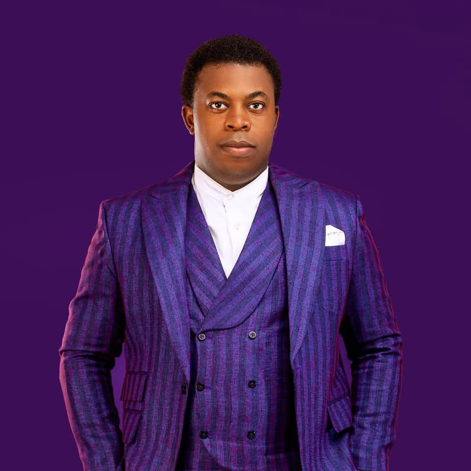
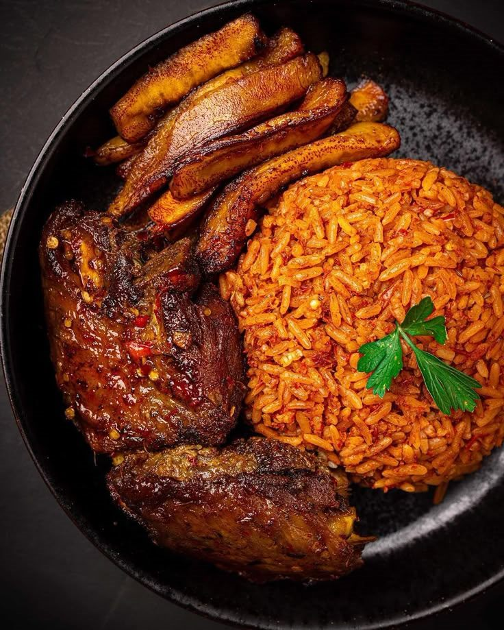

Experience its history
Badagry holds stories that deserve to be heard first-hand. The vision is to help you walk into that history with curiosity, not guesswork.
Meet the founder
He loves Badagry — its stories, its culture, its food, its people — and he wants more people to see what he sees in it. Enjoy Badagry is how he helps you discover this beautiful coastal land for yourself.
Meet Kingnewman
If you ask him, Badagry is more than just a place on the map. It is a beautiful coastal land filled with stories, culture, amazing food, warm people, and experiences worth discovering.
Kingnewman is the owner and creator of Enjoy Badagry. He built it for a simple, personal reason: he loves Badagry, and he wants more people to see what he sees in it. Not just passing through — but truly experiencing its history, enjoying its delicacies, relaxing in its peaceful spaces, and exploring its beautiful surroundings.
Whether you are visiting for business, relaxation, adventure, or simply to escape your usual routine, his promise is the same — he wants your time here to be worth it.
“Badagry is more than just a place on the map; it is a beautiful coastal land filled with stories, culture, amazing food, warm people, and experiences worth discovering.”

More than a destination
Kingnewman's love for Badagry is not abstract. He talks about it the way people talk about home — a place whose history deserves to be heard, whose food deserves to be tasted, and whose people deserve to be met.
“I love Badagry, and I want more people to see what I see in it,” he says. That wish is the seed of everything Enjoy Badagry does. He wants visitors to experience its history, enjoy its delicacies, relax in its peaceful spaces, explore its beautiful surroundings, and discover for themselves why this land is special.
He does not simply want you to visit Badagry. He wants you to experience it, enjoy it, and fall in love with it too.
— Kingnewman
The vision behind Enjoy Badagry
Enjoy Badagry exists to make this coastal land easy to discover — so that more people can experience it the way Kingnewman believes it should be experienced: fully, warmly, and without the usual friction of travel.
Badagry holds stories that deserve to be heard first-hand. The vision is to help you walk into that history with curiosity, not guesswork.
Amazing food is part of Badagry's welcome. Enjoy Badagry brings local flavours within reach, so tasting the town is part of every visit.
Peaceful spaces and beautiful surroundings are part of the promise — room to unwind, and plenty worth discovering when you are ready to move again.
Discover what makes Badagry special
History, culture, food, warm people and breathtaking coastal surroundings — Badagry offers a rare mix of all of them, close together, waiting to be discovered.




A better way to experience Badagry
Enjoy Badagry brings the essentials of a great visit together in one platform — so more of your time goes to the experience itself.
Discover destinations, events and tour packages — the places and experiences that make Badagry worth the trip.
Order local food and drinks from around town — enjoy Badagry's flavours wherever you are staying or exploring.
Comfortable temporary accommodation — browse hotels and places to stay, with the details you need to settle in easily.
Convenient car rides around town — get where you are going without the stress, whether for business or adventure.
The values behind the experience
Enjoy Badagry is guided by a few simple beliefs — all of them rooted in wanting your time in this land to be worth it.
Badagry's best stories, flavours and places are local. The goal is to help you find them — not a generic version of somewhere else.
Warm people are part of Badagry's character. Enjoy Badagry aims to meet visitors with that same warmth from the very first tap.
Discovering a place should not feel like work. Rides, food, stays and experiences are brought together so planning stays simple.
Whether you are here for business, relaxation or adventure, there is always more of Badagry waiting just beyond the usual route.
The measure of a visit is what you carry home. Time here should be worth it — full of memories, not missed chances.
A personal welcome
Whether you are visiting for business, relaxation, adventure, or simply to escape your usual routine — he wants your time here to be worth it.
He does not just want you to visit Badagry. He wants you to experience it, enjoy it, and fall in love with it too.
“Welcome to Enjoy Badagry. Let me help you make beautiful memories here!”
Kingnewman · Founder
Explore Enjoy Badagry
Discover destinations, find places to stay, order local food and book rides around town — everything you need to make beautiful memories in Badagry.